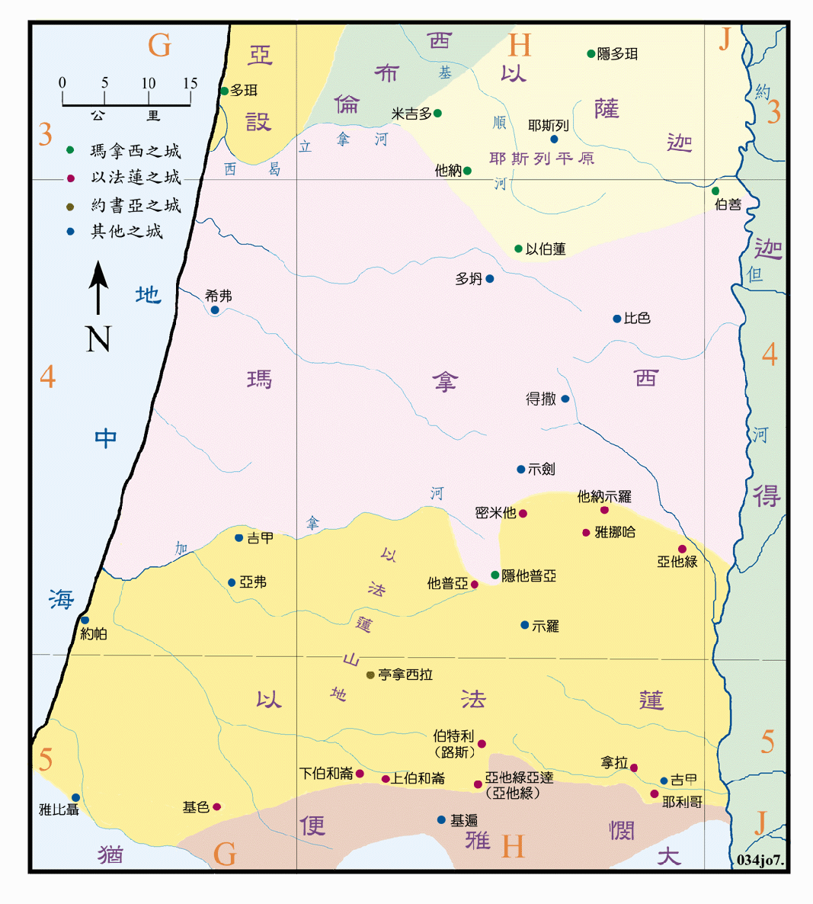

| 圣经 | 说明 |
|---|---|
| 书16:1-4 | 约瑟子孙地业的南界。 |
| 书16:5-10 | 以法莲支派地业的边界。 |
| 书17:1-6 | 玛拿西东半支派的地业。(绘在书图05中) |
| 书17:7-9 | 玛拿西西半支派的南界。 |
| 书17:10 | 玛拿西支派的北界。 |
| 书17:11-13 | 玛拿西在亚设和以萨迦两支派境内所有之城。 |
| 书19:49-50 | 约书亚的地业亭拿西拉城。 |
对约瑟的子孙所得地业的说明，只有边界，并没有中间城邑的名字，而且对边界的说明也有一些不明之处，如以法莲的南界不完全，也与前面所述约瑟子孙的南界不符，故采用约瑟子孙的南界为准。玛拿西的北界虽然是与亚设和以萨迦为邻，但当时尚未分地给他们，所以边界也不能定出。除两支派间的边界线尚清楚之外，这两支派实际所得到的地业，要到下次在示罗分地以后才能作最后的决定，所以以法莲实际的疆域绘在<书图08>，玛拿西的则在<书图09>中。而本图所绘，仅是暂时性的情形，只是一个分地过程的说明。
有一点可注意的是，在玛拿西支派所得的城邑中，有几个却是在亚设和以萨迦的境内，而且都是当时北部的几个军事重镇。
约书亚本是以法莲支派的子孙，所得之地也是在该支派地业之内。